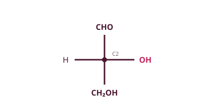
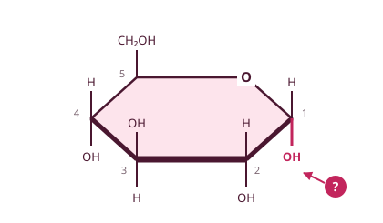

Los glúcidos son las biomoléculas más abundantes: cadenas carbonadas con grupos hidroxilo y una función aldehído o cetona (polihidroxialdehídos o polihidroxicetonas). Muchos siguen la fórmula (CH₂O)ₙ, de ahí «hidratos de carbono». Las plantas fijan CO₂ por fotosíntesis y los almacenan; gran parte de nuestra dieta es almidón. Se unen a lípidos (glucolípidos) y proteínas (glucoproteínas).
| Término | Significado |
|---|---|
| Glucólisis | Degradar glucosa para obtener ATP |
| Glucogenólisis | Romper glucógeno para obtener glucosa |
| Gluconeogénesis | Fabricar glucosa nueva (hígado) desde lactato, aminoácidos y glicerol, en hipoglucemia |
Los glúcidos son el combustible inmediato porque están bastante reducidos y, a la vez, son solubles en agua. Los ácidos grasos dan más energía pero son insolubles: son una reserva de uso diferido. Si faltan glúcidos se degradan grasas y se acumulan cuerpos cetónicos (cetosis → acidosis metabólica).
Monosacáridos: solubles, dulces, cadena no ramificada; todos los carbonos llevan OH salvo uno con el carbonilo. Según los carbonos: triosas (gliceraldehído), tetrosas (eritrosa), pentosas (ribosa), hexosas (glucosa), heptosas (sedoheptulosa), nonosas (ácido neuramínico). Según el carbonilo: aldosas (aldehído, C1) o cetosas (cetona, C2).

Enlaces horizontales hacia el lector, verticales hacia dentro. En azúcares largos, D o L se decide por el OH del carbono quiral más alejado del carbonilo. Casi todos los azúcares naturales son D (la D-glucosa o dextrosa es el más abundante).
En disolución, los monosacáridos de 5 o más carbonos se ciclan: el carbonilo reacciona con un OH de la misma molécula y forma un hemiacetal (aldosas) o un hemicetal (cetosas). Aparece un nuevo carbono quiral, el carbono anomérico, y dos anómeros (α y β), que son diastereoisómeros.

| Derivado | Qué es | Ejemplos |
|---|---|---|
| Ésteres fosfato | Azúcar + fosfato: «compuestos activados» | Glucosa-6-P, glucosa-1-P |
| Ácidos | Aldónicos (oxidación del C1), urónicos (del último carbono), aldáricos (de ambos) | Ácido glucónico, ácido glucurónico |
| Alditoles | Reducción del carbonilo (polialcoholes) | Sorbitol, manitol, eritritol, xilitol, glicerol |
| Aminoazúcares | Un OH cambiado por un NH₂ (suelen estar acetilados) | Glucosamina, galactosamina, ácido N-acetilmurámico |
| Desoxiazúcares | Un OH cambiado por H | 2-desoxirribosa (ADN), fucosa, ramnosa |
| Glucósidos | OH anomérico + OH de otro compuesto | Ouabaína (inhibe la bomba Na⁺/K⁺), amigdalina (libera cianuro) |
El ácido glucurónico se une en el hígado a bilirrubina, fármacos y esteroides para hacerlos solubles y eliminarlos. El manitol intravenoso es un diurético osmótico: baja la presión intracraneal, el edema cerebral y la presión intraocular.
El enlace O-glucosídico (covalente, lo forman las glucosiltransferasas) une el OH del carbono anomérico de un monosacárido con un OH de otro. El carbono anomérico que participa pierde el carácter reductor: el que lo conserva libre es el extremo reductor.
| Disacárido | Composición y enlace | ¿Reductor? | Notas |
|---|---|---|---|
| Maltosa | Glc α(1→4) Glc | Sí | Digestión del almidón (amilasa) |
| Sacarosa | Glc α(1→2)β Fru | No | Azúcar de mesa; la rompe la sacarasa |
| Lactosa | Gal β(1→4) Glc | Sí | Leche; la rompe la lactasa |
| Trehalosa | Glc α(1→1)α Glc | No | Hongos, insectos |
| Celobiosa | Glc β(1→4) Glc | Sí | Unidad de la celulosa |
| Gentiobiosa | Glc β(1→6) Glc | Sí | Glucósidos vegetales |
Con poca lactasa, la lactosa se queda en la luz intestinal, arrastra agua por ósmosis y produce diarrea, distensión y flatulencia. El déficit de sacarasa da síntomas parecidos.
| Polisacárido | Estructura | Función |
|---|---|---|
| Amilosa | Glucosa α(1→4), lineal y helicoidal | Almidón (reserva vegetal) |
| Amilopectina | α(1→4) + ramas α(1→6) cada 10-20 restos | Almidón |
| Glucógeno | α(1→4) + ramas α(1→6) cada 8-10 restos (más ramificado) | Reserva animal (hígado y músculo) |
| Celulosa | Glucosa β(1→4), lineal y rígida | Estructural; no la digerimos |
| Quitina | N-acetil-β-D-glucosamina β(1→4) | Exoesqueleto de artrópodos, hongos |
La amilopectina tiene enlaces α(1→4) y α(1→6), no α(1→2) como aparece en el PDF.
Polímeros de disacáridos repetidos con un aminoazúcar; tienen carácter ácido (sulfato o carboxilo). Forman parte de los proteoglucanos.
Fallan las enzimas lisosomales que degradan los glucosaminoglucanos, que se acumulan. Autosómicas recesivas salvo el síndrome de Hunter (ligado al X). Rasgos faciales toscos, baja estatura, alteraciones esqueléticas, opacidad corneal, hidrocefalia, sordera y retraso mental variable.
Proteínas con uno o más azúcares unidos covalentemente (sin unidad repetitiva). Receptores de membrana, moco (lubricación de vías respiratorias y digestivas), hormonas (FSH, LH, gonadotropina coriónica) y proteínas plasmáticas (inmunoglobulinas, protrombina…). La glucoforina del eritrocito tiene un 60 % de azúcar.